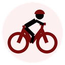

Mikel Landa

Dorsal: 121
13/12/1989 – España

Dorsal: 121
13/12/1989 – España
Dorsal: 122
25/03/1998 – Italia
Dorsal: 123
06/10/2002 – Italia
Dorsal: 124
18/09/1998 – Reino Unido
Dorsal: 125
14/01/2001 – Francia
Dorsal: 126
21/09/2000 – Bélgica
Dorsal: 127
01/06/1999 – Bélgica
Dorsal: 128
18/03/1999 – Italia